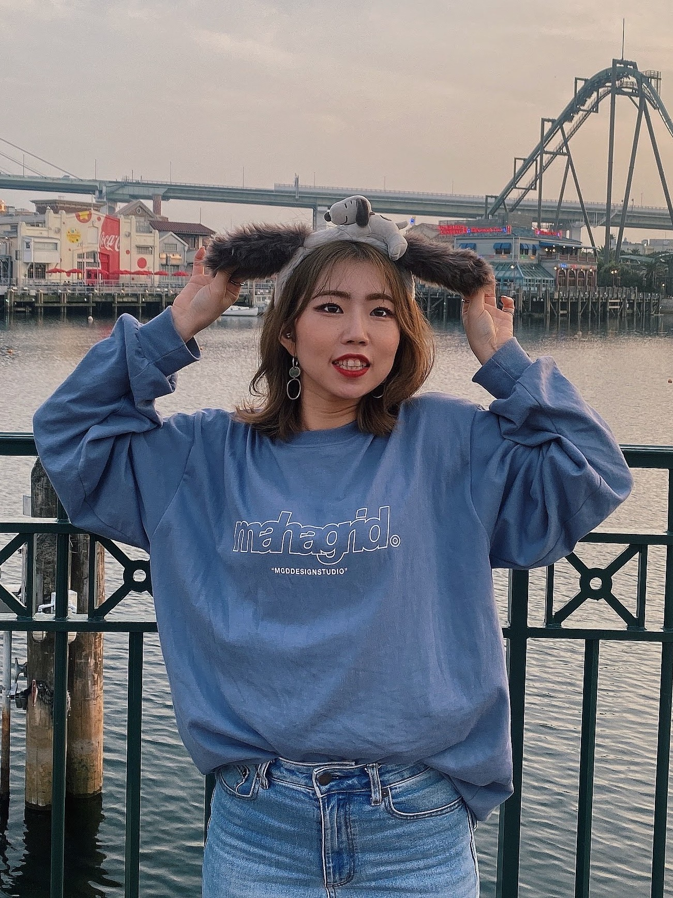

My Plofile
船曳 未翔

性格:
長所：人見知りをせず、明るくて好奇心旺盛な性格です。やりたいと思ったことは結果を心配するよりもまず試してみる行動派で、楽観的なため悩みや不満、失敗があっても寝たら忘れ、すぐに切り替えて挑戦を続けることができます。
また、人と関わることが好きなため、出会いがある場(新しい職場環境やプライベートにて)があれば迷うことなく参加します。
計画性はあまりないものの、その分臨機応変に対応する能力があります。
短所：寂しがりやで一人の時間が嫌いだったり、好奇心が旺盛すぎて集中力が欠けたり、計画性がないために準備が不十分なことがあります。また、人の顔色を窺ってしまう傾向もありますが、周りを楽しませることができ、マルチタスクをこなしたり臨機応変に対応することができ、他人の変化に気づけたりと短所をも長所として生かしていけるよう心がけています。
MBTI：ESFP（エンターテイナー）
好きな食べ物：チーズ
嫌いな食べ物：チョコ
趣味：ダンス、音楽鑑賞、スノーボード、キャンプ、ジェットスキー、語学学習
ダンス:
趣味のダンスは小学生の頃から約14年ほど続けています。
韓国へのワーホリに行きたかった1番の理由がダンスで、ずっとレッスンを受けてみたいと思っていたダンサーさんがいました。
本来関わるはずのなかった人たちと国籍関係なく関わることができ、ダンスはもちろんダンス以外の経験もすることができたため本当にダンスをしていてよかったと思いました。
また、学生時代は副部長として活動しており、何かを成功させるためには一人でやろうとせず周りと協力ししっかりと役割分担することで成功させることができるということを学びました。大人数をまとめる大変さを感じつつも、夢中になれることを周りと共有できる楽しさ・幸せをとても感じました。
4年間のダンス部活動や今までの経験で、先輩後輩関係なく頼ることが大切だということや、言葉が100%伝わらなくてもダンスで一緒に楽しむことができるということや、楽しいと思えるまでには多くの努力が必要ということなどたくさん学べました。
これからも動けなくなるまで続けたいと思います。

私の強み
関係構築力と柔軟性
人見知りをせず、初対面の人ともすぐに打ち解けることができます。
居酒屋での経験を通じて、相手の好みや性格を把握し、会話に繋げることができます。
また、急な状況変化にも臨機応変に対応し、優先順位を考えながら効果的に行動します。
居酒屋での経験を通じて、相手の好みや性格を把握し、会話に繋げることができます。
また、急な状況変化にも臨機応変に対応し、優先順位を考えながら効果的に行動します。
積極的な行動力
やりたいことには積極的に取り組み、達成するまで諦めません。
目標を達成するために、覚悟を持って行動し、困難にも立ち向かいます。
留学や新たな挑戦にもためらいなく取り組む姿勢があります。
目標を達成するために、覚悟を持って行動し、困難にも立ち向かいます。
留学や新たな挑戦にもためらいなく取り組む姿勢があります。
チャレンジ精神
新しいことに挑戦することに積極的であり、自己成長を重視します。
他部署への応援や管理職への挑戦など、不安や困難を乗り越えながら成長し続けます。
失敗を恐れず、何度でも挑戦し、経験を積み重ねます。
他部署への応援や管理職への挑戦など、不安や困難を乗り越えながら成長し続けます。
失敗を恐れず、何度でも挑戦し、経験を積み重ねます。
好奇心旺盛
他人の趣味や仕事に興味を持ち、積極的に学びます。
質問することをためらわず、自己成長のために常に新しいことに挑戦します。
質問することをためらわず、自己成長のために常に新しいことに挑戦します。
継続力
長期的な目標に向けて、コツコツと努力し続けることができます。
仕事や趣味を長期間続け、挫折せずに努力を続ける姿勢があります。
仕事や趣味を長期間続け、挫折せずに努力を続ける姿勢があります。
仕事に対するポジティブな姿勢
どんな状況でも楽しみや面白みを見出し、前向きに取り組む姿勢があります。
困難な状況でもチャンスと捉え、自身の成長ややりがいを見出します。
困難な状況でもチャンスと捉え、自身の成長ややりがいを見出します。